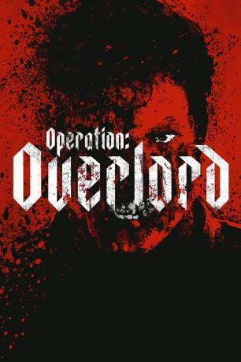

#10624 Operation: Overlord
Alternativ: Overlord (Englischer Titel)
 gesehen am 15.02.2019
gesehen am 15.02.2019
 
 IMDB-Wertung: 7.1 / 10
IMDB-Wertung: 7.1 / 10  Metascore: 60
Metascore: 60 
In "Operation: Overlord" werden kurz vor dem D-Day zwei amerikanische Soldaten in ein von Nazis besetztes Dorf in Frankreich geschickt, um eine extrem wichtige Mission zu erfüllen. Dort erleben sie allerdings mit genetisch hochgezüchteten Super-Soldaten den Albtraum ihres Lebens!
WEBHDRIP DUBBED
Jahr: 2018
Dauer: 110 Minuten
FSK: 16
Land: USA Studio: Paramount PicturesTonspuren: DD2.0 - ,
Untertitel: Deutsch,
Auflösung: 1080p (1912x792) Größe: 4085 MB
Genre: Action, Horror, Sci-Fi, Abenteuer, Krieg, Mystery
Regisseur: Julius Avery
Drehbuch: Billy Ray, Mark L. Smith, Billy Ray
Soundtrack: Jed Kurzel
Darsteller:
- Jovan Adepo als Boyce
 Wyatt Russell als Ford
Wyatt Russell als Ford- Mathilde Ollivier als Chloe
 Pilou Asbæk als Wafner
Pilou Asbæk als Wafner John Magaro als Tibbet
John Magaro als Tibbet Iain De Caestecker als Chase
Iain De Caestecker als Chase- Jacob Anderson als Dawson
- Dominic Applewhite als Rosenfeld
 Bokeem Woodbine als Rensin
Bokeem Woodbine als Rensin Erich Redman als Dr. Schmidt
Erich Redman als Dr. Schmidt- Mark McKenna als Murphy
- Hayley Carmichael als Mrs. Lesner
- Marc Rissmann als Scherzer
- Sarah Finigan als French Mother
- Bart Lambert als Navigator
 Michael Epp als German Soldier
Michael Epp als German Soldier- Tom Mothersdale als German Soldier
- Ross Tomlinson als Young Man
- Ben Tavassoli als Nez
- Shubham Saraf als Hays
- Andy Wareham als Richt
- Nick Roeten als The Mistake
- Patrick Brammall als American Officer
- Charles Robert Barrett als German SS Soldier (uncredited)
- Adam Collins als GI Paratrooper (uncredited)
- Peter Dawson als German SS Soldier (uncredited)
- Shawn Dixon als Dead German Soldier #1 (uncredited)
- James Galvin als Nazi Soldier (uncredited)
- David Gambier als Nazi Soldier (uncredited)
 Jorge Leon Martinez als US Soldier (uncredited)
Jorge Leon Martinez als US Soldier (uncredited)- Éva Magyar als Aunt Simone (uncredited)
- John Whitby als German SS Soldier (uncredited)
- Gianny Taufer als Paul
- Joseph Quinn als Grunauer
- Meg Foster als Chloe's Aunt
- Gunther Wurger als German Officer
- Alison Thea-Skot als Re-Animated Woman
- Mickey Lewis als Nazi Soldier (uncredited)
- James Thomas Scott als French Prisoner (uncredited)
- Dean Weir als US General (uncredited)
- Chris Wilkinson als Lab Technician (uncredited)
- Ryan Wiseman als German SS Soldier (uncredited)
- Gunter Würger als German Officer (uncredited)
Datei: X:\2018(N-Z)\Operation Overlord (2018, FSK16, 1912x792).mkv seit 04.02.2019
Festplatte: HD 2018(G-Z)-2019(A-Z)
 Es gibt insgesamt 172 Filme in der Gruppe '2018(N-Z)'
Es gibt insgesamt 172 Filme in der Gruppe '2018(N-Z)'